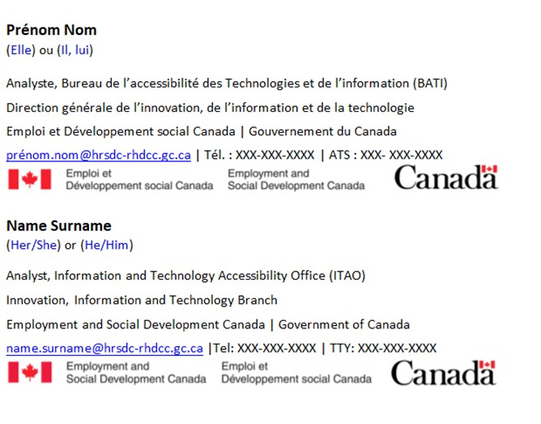

Your Digital Signature Speaks, So Make It Awesome and Accessible!
Your email signature is more than just your contact information, it’s your “Hello, world!” at the end of every email. It represents you, your team, and our department. Make it accessible so that everyone can understand it.
Questions to Ask Yourself
- Can someone using adaptive technology read and understand my signature?
- Are my font and colour choices readable for low vision users?
- Have I provided bilingual signature blocks?
Important! Outlook’s “Signature and Stationery” window does not support several features, such as the Colour Contrast Analyser or built-in Accessibility Checker, and does not allow you to set the proofing language.
1. Create or Update an Accessible Signature in Word
- Open Microsoft Word.
- Create your new signature directly in Word. Use this template to get yourself started
- Alternatively, you can copy your existing signature by going to Outlook > File > Options > Mail > Signatures.
- Outlook's "Signature and Stationary" window will appear. Copy your existing signature, then paste it into Word.
2. Apply These Best Practices
- Stack languages one on top of the other. This simplifies language proofing, helps unilingual readers, and ensures that both official languages have equivalent content.
- Use accessible sans-serif fonts like Aptos, Arial, or Calibri in size 12 or larger with 1.5 spacing. Avoid using light fonts, italics, underlines, or highlights.
- Test your text, images, and links using the Colour Contrast Analyser. A high colour contrast ratio improves readability, reduces eye strain, and supports users with low vision or colour blindness.
- Write each name in full before using acronyms or initialisms. Example: Employment and Social Development Canada (ESDC).
- If you'd like, you can use the ESDC banner and Canada wordmark. Refer to the approved alt text guidelines for these images to ensure that they are formatted correctly. For other graphics, follow standard alt text guidelines.
- Run Word's Accessibility Checker by selecting Review > Check Accessibility. Fix any issues before copying and pasting your signature into Outlook.
- Lastly, tag the English and French signature blocks by selecting Review > Language > Set Proofing Language

Figure 1: An example template of an accessible signature block. If you are adding additional contact options, write “Tel” (telephone) and “TTY” (teletypewriter) in full.
3. Paste Your Signature Block into Outlook
- Open
Outlook . Go toFile > Options > Mail > Signatures . - Copy your signature and paste it into the "Signature and Stationary" window. To do so, right-click and select Keep Source Formatting. Alternatively, input CTRL + V > CTRL > K to preserve the source formatting when pasting text. You can consult the following Microsoft article to learn other ways to control the formatting when you paste text.
For more information, consult the IT Accessibility Office's guide on best practices for signature blocks.
Need Help?
Reach out via our intake form or email us at EDSC.TI-IT.A11Y.ESDC@hrsdc-rhdcc.gc.ca. Our team will be happy to assist you.